本ドキュメントは porter の主要な動作シナリオをシーケンス図で示します。
potrOpenService() を SENDER として呼び出したときの内部処理です。
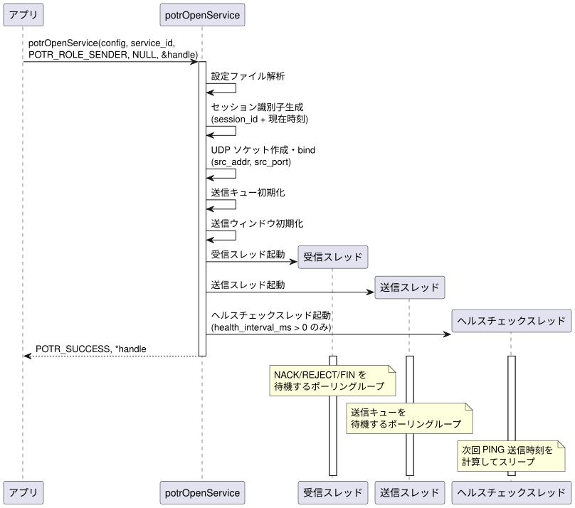
potrOpenService() を RECEIVER として呼び出したときの内部処理です。
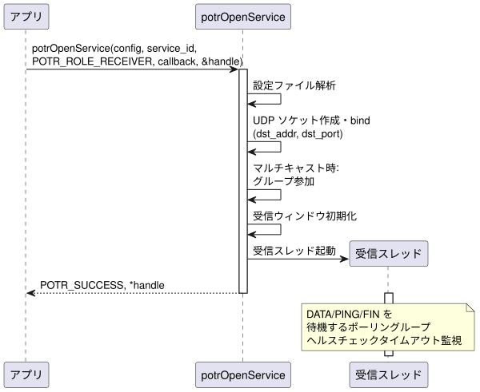
POTR_SEND_BLOCKING を指定せずに potrSend() を呼び出したときのデータフローです。
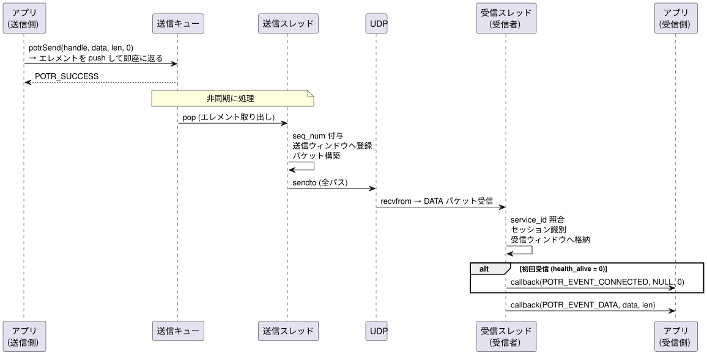
POTR_SEND_BLOCKING を指定して potrSend() を呼び出したときのデータフローです。
送信完了まで potrSend() が返りません。
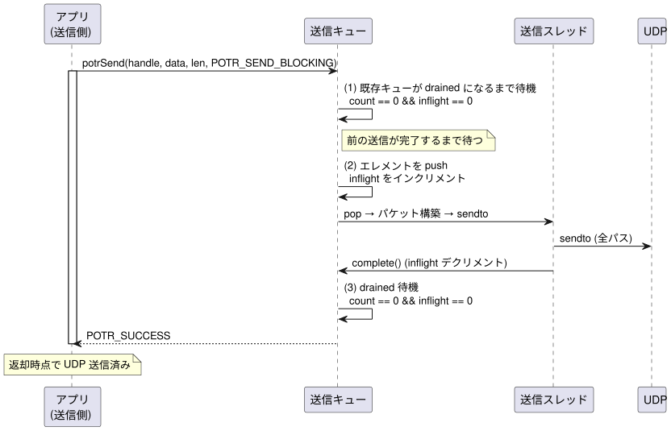
送信データが max_payload を超える場合の分割・結合処理です。
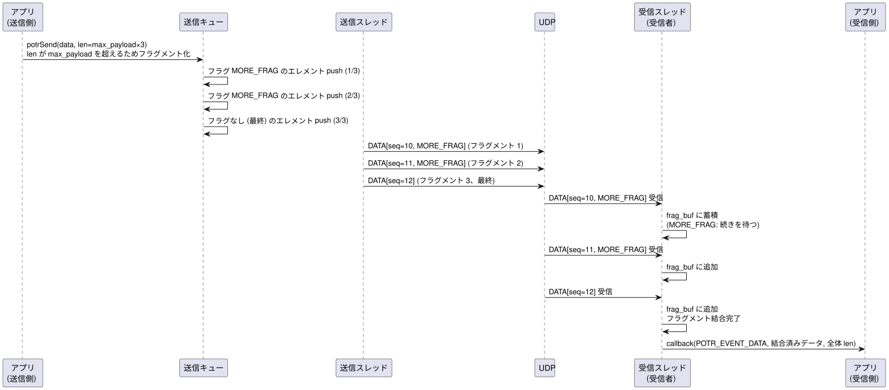
パケットロスが発生した場合の再送シーケンスです。
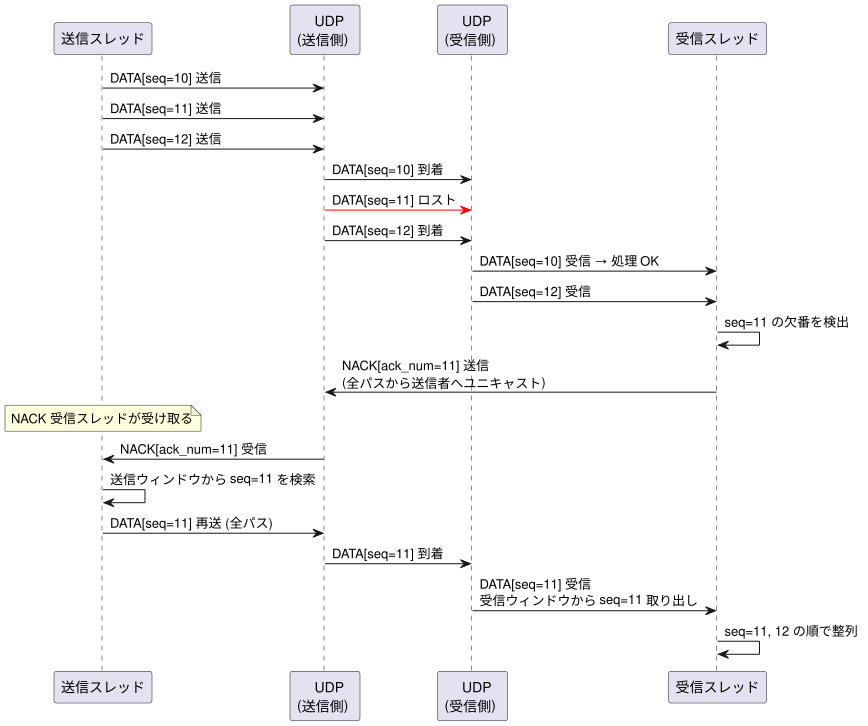
送信ウィンドウから evict 済みのパケットを要求した場合のシーケンスです。
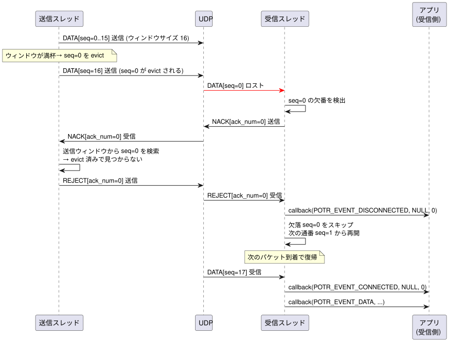
ヘルスチェックが有効な場合の定周期 PING 送信です。
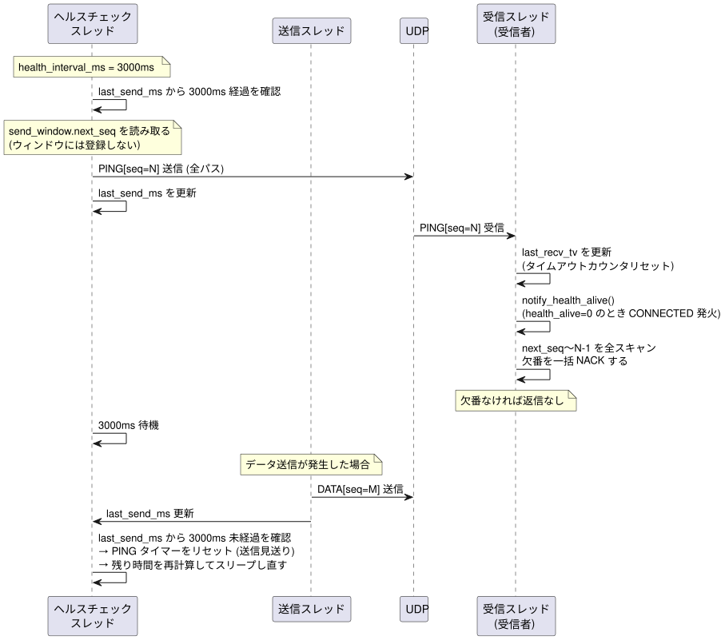
PING が届かなくなった場合の切断検知と復帰です。
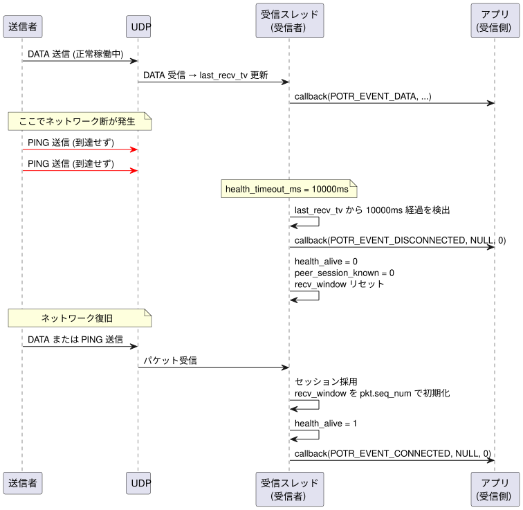
potrCloseService() による正常終了シーケンスです。
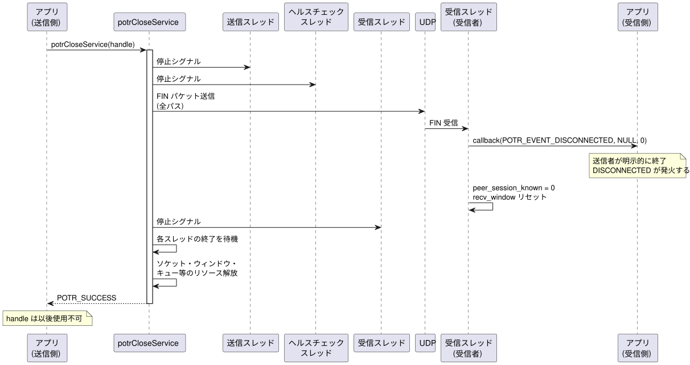
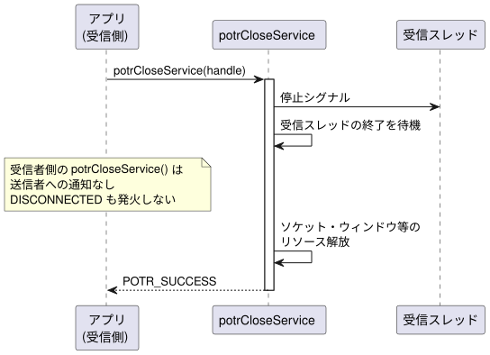
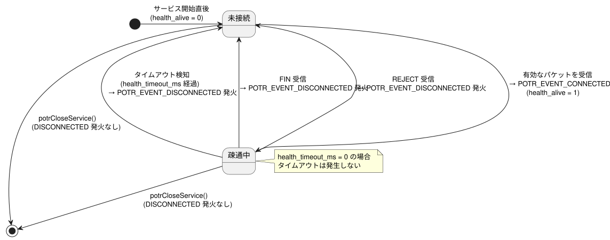